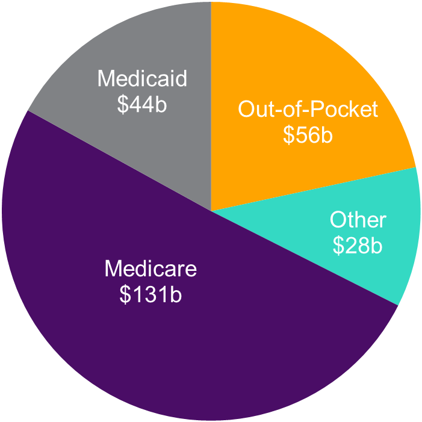
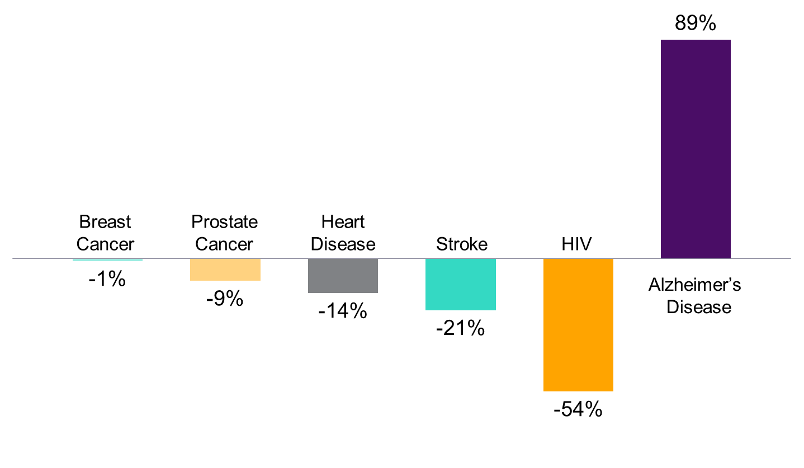

Alzheimer’s is the most expensive disease in America, with costs soaring past a quarter of a trillion dollars.
In 2017, the direct costs to American society of caring for those with Alzheimer’s will total an estimated $259 billion.
Average per-person Medicare spending for those with Alzheimer’s and other dementias is more than three times higher than average per-person spending across all other seniors. Medicaid payments are 23 times higher.
Unless something is done, in 2050, Alzheimer’s will cost $1.1 trillion (in 2017 dollars).
Nearly 1 in every 5 Medicare dollars is spent on people with Alzheimer’s. In 2050, it will be more than one in every three dollars.
2017 Costs of Alzheimer's = $259 Billion
Alzheimer’s kills – and deaths have nearly doubled in the last 14 years.
Alzheimer’s disease is the sixth leading cause of death in the United States and the fifth leading cause of death for those aged 65 and older.
Deaths from Alzheimer’s increased 89 percent from 2000 to 2014, while deaths from other major diseases (including heart disease, stroke, breast and prostate cancer, and HIV/AIDS) decreased.
Alzheimer’s is the only cause of death among the top 10 in America that cannot be prevented, cured, or even slowed.
Change in Number of Deaths: 2000-2014
Caring for someone with Alzheimer’s is exceptionally demanding.
In 2016, more than 15 million family members and friends provided 18.2 billion hours of unpaid care to people with Alzheimer’s and other dementias, at an economic value of more than $230 billion.
The tasks required of dementia caregivers are particularly intrusive and burdensome. Nearly half provide help getting in and out of bed. And, compared with other caregivers, they are much more likely to assist with bathing or showering and to deal with incontinence or diapers.
Compared with other caregivers, Alzheimer’s and dementia caregivers are two and a half times as likely to help with emotional or mental health problems and nearly four times as likely to assist with behavioral issues.
More than 1 out of 3 Alzheimer’s caregivers report their health has gotten worse due to care responsibilities, compared with 1 out of 5 caregivers of other older adults.
In all, the physical and emotional impact of caregiving on Alzheimer’s and other dementia caregivers resulted in an estimated $10.9 billion in increased caregiver health costs in 2016.
The caregiving burden is only going to increase as the number of Americans living with Alzheimer’s rapidly grows.
Today, 5.5 million Americans are living with Alzheimer’s, including an estimated 200,000 under the age of 65.
One in 10 Americans aged 65 and older has Alzheimer’s. Among people aged 85 and older 1 in every 3 does.Nearly two-thirds of those with Alzheimer’s – 3.3 million – are women.
Every 66 seconds, someone in America develops Alzheimer’s – resulting in nearly a half million new cases this year.
By 2050, someone in the United States will develop Alzheimer’s every 33 seconds. At that time, the total number living with Alzheimer’s is projected to reach 13.8 million – and could be as high as 16 million.